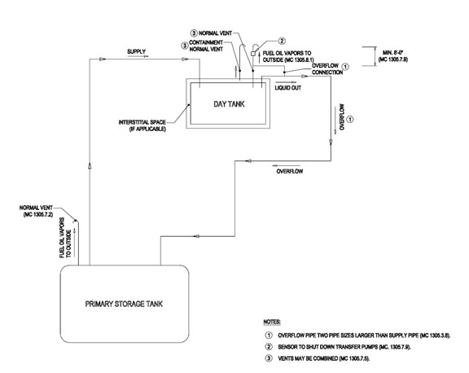
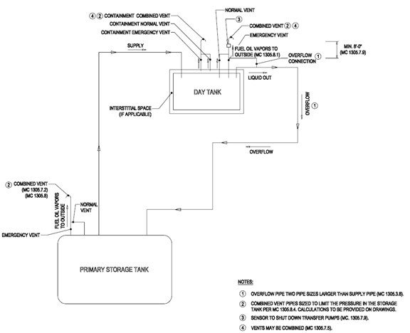
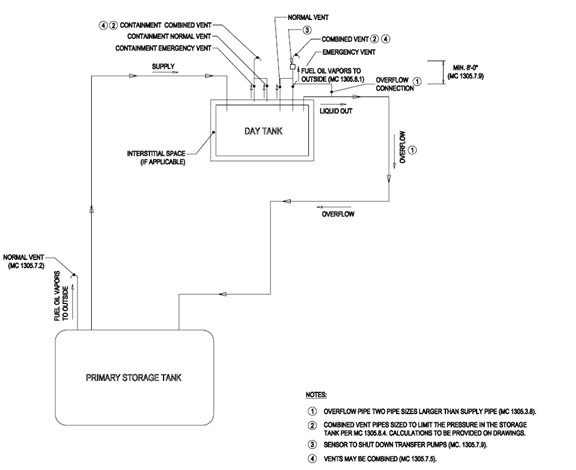

The figures in this appendix shall supplement the provisions for venting of tanks in Section 1305 and are intended for illustrative purposes. Where there is a conflict between the figures in this appendix and the provisions in Section 1305, the provisions of Section 1305 shall govern.

Figure C101.1(1) Primary Tank: UL 80, ASME BPVC, or NYC Alternate Tank Day Tank: UL 80, ASME BPVC, or NYC Alternate Tank

Figure C101.1(2) Primary Tank: UL 142 or Dual Label Tank Day Tank: UL 142 or Dual Label Tank

Figure C101.1(3) Primary Tank: UL 80, ASME BPVC, or NYC Alternate Tank Day Tank: UL 142 or Dual Label Tank